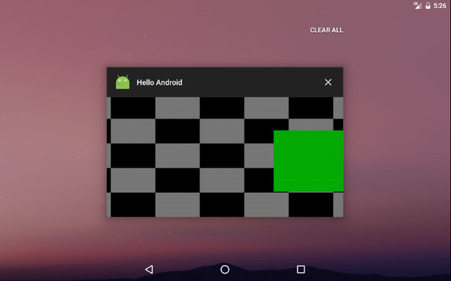
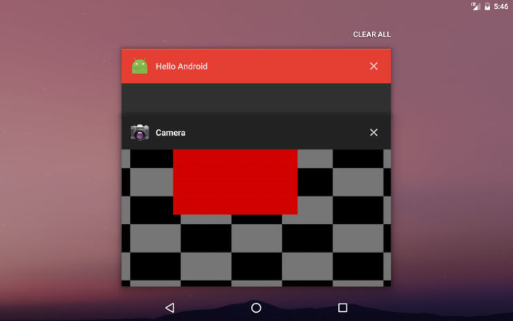
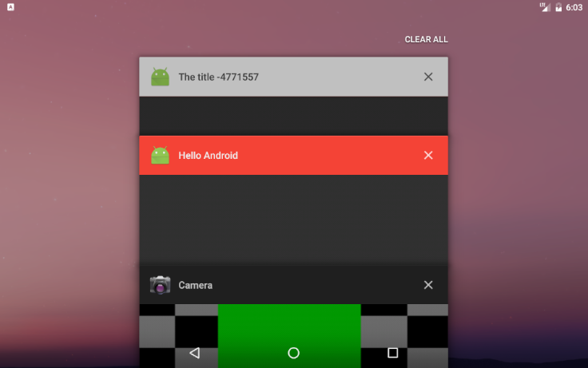

Preface
这个月状态挺差的，各种不顺心和意外，不过还是照例把新学的东西整理一下吧。
- Task 和 Document 的基本概念
- Loader 的基本概念和用法
Task & Document
Task
下面的代码将启动照相机:
|
|
效果如图:

想把照相机和自己的 App 分开的话，就这样:
|
|
效果如图:

这张图里看上去有两个 App，在 Android 官方文档 里给每个像上图里的 App 定义了一个术语叫做 “Task”，也就是上图里有2个 Task。容纳许多个 Task 的整个屏幕（也就是上图里的整个屏幕）就叫做 “Recents screen”（其他非正式名称包括但不限于: Overview screen, Recent apps）.
Document
使用下面的代码可以让自己的 App 的某个 Activity 以多个 Task 的形式展现在 Recents screen 里:
|
|

Task 是相对于 Recents screen 而言的，也就是上面的图片里一共有 3 个 Task。Android 官方文档 创造了一个新的概念称之为 “Document”，Document 是相对于单个 App 而言的，以上面的图片为例的话，Hello Android 这个 App 就有 2 个 Document，照相机 App 只有1个 Document。
不过我觉得还有另一种说法, 上面的 Hello Android 创建了一个新的 Task 名为 The title -4771557, 这个新的 Task 才算做是 Document, 原来已经存在的叫做 Hello Android 的 Task 不能称之为 Document, 因此 Hello Android 这个 App 一共有1个 Document。
至于哪种说法是对的 我也没能在官方文档中找到。
Loader
以我目前的经验来看，Loader 适合那种设计上耗时不太长的操作（1s 或更少，比如使用 ContentProvider 请求数据，或者是 从设备存储里读取某个文件，并且不指望这个异步操作能完成），其最终目的是让 App 尽快响应用户的操作（Responsive）。目前来看，相比 AsyncTask，LoaderManager 会帮我 handle 一些 Activity/Fragment 的生命周期事件，并在适当的时候通知我分配/回收资源。在配置发生变动时（比如屏幕旋转）会导致 Activity/Fragment 被重新创建，这种情况下用 LoaderManager 就比手动管理 AsyncTask 来得省事。
实现 AsyncTaskLoader
鉴于我还没有学到 ContentProvider 那一章，所以目前先用 AsyncTaskLoader 来做演示。
- 新建一个类并继承
android.content.AsyncTaskLoader - Override 下列方法
onStartLoading()loadInBackground()onStopLoading()deliverResult(D data)onReset()
下面展示一个 AsyncTaskLoader 的一种实现。
|
|
实现 LoaderManager.LoaderCallbacks
该接口的实现负责处理下面这几件事:
onCreateLoader(int id, Bundle args): 负责根据 ID 为 LoaderManager 提供相应的 Loader 实例onLoadFinished(Loader loader, D data): Loader 运行出结果后会把结果递送到这里,data就是结果onLoaderReset(Loader loader): 当 Loader 需要被回收的时候调用该回调函数
下面是一个 LoaderManager.LoaderCallbacks 的实现的例子:
|
|
AsyncTaskLoader 的优缺点
优点:
- LoaderManager 会在 Activity/Fragment 发生配置变化的时候 管理好它所管理的 Loader 实例
缺点:
AsyncTaskLoader没有AsyncTask的publishProgress(), 想在界面上展示进度的话 还得另想办法.
因为 Loader 的性质导致它不能强引用某个 Activity/Fragment, 所以还得考虑用 WeakReference 或者 Handler 来实现.- 想中断正在运行的 Loader 需要调用
cancelLoad(), 但cancelLoad()运行在主线程而不是loadInBackground()所在的 Worker Thread, 因此没法使用标准的 Thread APIThread.currentThread().interrupt()和Thread.currentThread().isInterrupted()来中断正在运行的 Loader. 由此带来的问题就是: 如果loadInBackground()里的代码想知道当前 Loader 是否想中断运行的话, 还得使用Loader.isLoadInBackgroundCancelled()来判断, 这样就将所有代码限制到只能在loadInBackground(), 不能分开到其它的类里.
综合上面的2个缺点, 我认为 AsyncTaskLoader 不适合用来做过长时间的、需要用户感知到进度的操作。也许以后得自己实现一个类似 AsyncTaskLoader 的类来弥补上面的缺点。
结语
可以说 这篇博文写得非常不走心，Android 官方文档有些晦涩不清，搞得我光是 Task/Document 的概念就查了好多资料才理解它。后来又看 Loader，它的优点在缺点的掩盖下分文不值。